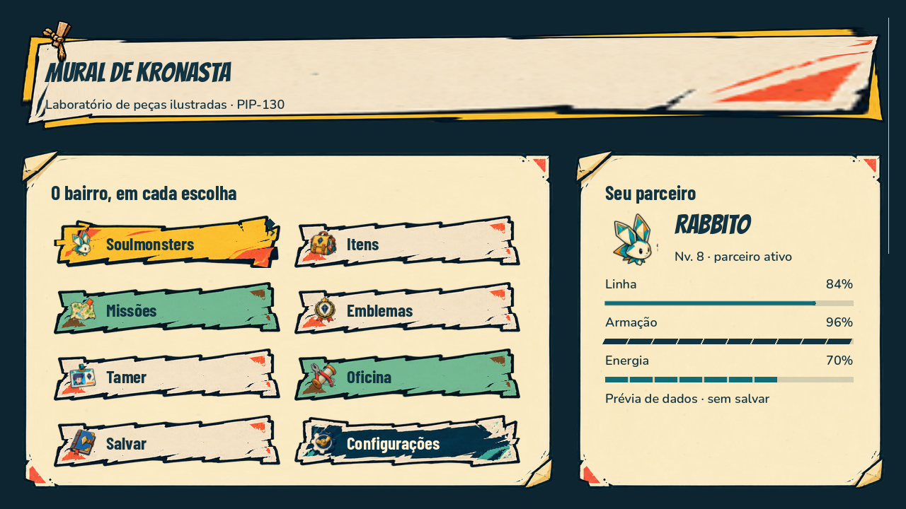

216 checks novos passaram. Composição em quatro resoluções, texto a 150%, navegação e foco com eventos simulados. O sistema é opt-in: a campanha ainda mantém a interface atual até a migração de cada tela.

Amplie a imagem para conferir em tamanho nativo. Resoluções menores e texto ampliado usam redistribuição e rolagem, sem diminuir a fonte de toda a tela.
Arte modular
21 arquivos RGBA: nove suportes/ornamentos e 12 ícones. Cartazes compactos e painéis altos têm construções distintas; presilhas e cantos ficam fixos.
Prompts e proveniênciaInteração nativa
Button, campos, popup e foco do Godot; disponibilidade e retorno de foco verificados. Controle e mouse foram simulados: não houve teste de hardware físico ou fluxo completo da campanha.
Resultados do teste novoLeitura medida
Valores e rótulos separados da arte. Linha contínua, nervuras de Armação e células de Energia, com nome e valor. Pares técnicos de contraste registrados, sem declarar certificação.
Medições de contraste